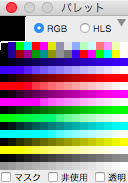
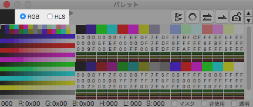
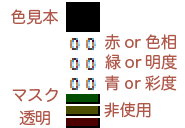
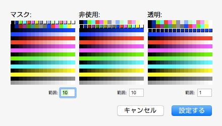
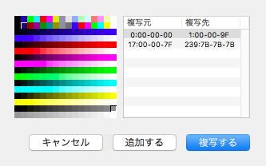

パレットウィンドウ
このウィンドウは本ツールで前面に来ている主ウィンドウで編集している画像の「パレットの管理」を行います。

ウィンドウの拡縮
 の部分をクリックすることにより、パレットウィンドウの幅を切り替えられます。
の部分をクリックすることにより、パレットウィンドウの幅を切り替えられます。

縮小表示

拡大表示
色混合
色を混ぜ合わせる際、色要素を RGB で演算するか HLS で演算するかを選択します。

色混合そのものについて詳しくはこちらを参照してください。
色選択
全色の一覧を表示している部位をクリックすると、描画に使用する色を選択できます。

また、主ウィンドウ上で副ボタン（右ボタン）をクリックして、その位置にある色を選択色にする（色を吸い取る）ことも可能です。
選択中の色は左上隅に表示します。
この左上隅をクリックすると、背面レイヤーを吸い取ります（背面レイヤー吸い取り時は色一覧で選択中の色が無しになります）。

また、色一覧でダブルクリックすると、その色に対する色要素・色補助属性を設定するシートが開きます。

色要素の編集
色要素の詳細を表示している部分では色要素の編集が可能です。

１色づつの色情報を縦にならべており、次の図のようになっています。

なお、色要素・色補助属性については詳しくはこちら（色要素）とこちら（色補助属性）を参照してください。
また、色混合を HLS にしている場合、色要素の編集は行えません。
色補助属性の一括指定
 の部分をクリックすることにより、色補助属性設定シートが開き、複数の色に対する色補助属性を一括して設定できます。
の部分をクリックすることにより、色補助属性設定シートが開き、複数の色に対する色補助属性を一括して設定できます。

浮き出したような表示になっている場合に、その属性が有効となります。
このシートの色一覧でクリックやドラッグして各々の色の属性を設定します。
隣接した色を連続して対象色とする場合は、その連続数をリスト下の範囲で指定します。
グラデーション作成
 の部分をクリックすることにより、パレットグラデーション作成シートが開き、グラデーションを作成できます。
の部分をクリックすることにより、パレットグラデーション作成シートが開き、グラデーションを作成できます。

主ボタン（左ボタン）で開始色、副ボタン（右ボタン）で終了色を選択します。
パレットグラデーションは色混合の指定に応じた色を作成します。

RGB で作成した場合

HLS で作成した場合
色交換
 の部分をクリックすることにより、色交換設定シートが開き、色要素の交換ができます。
の部分をクリックすることにより、色交換設定シートが開き、色要素の交換ができます。

主ボタン（左ボタン）で交換元、副ボタン（右ボタン）で交換先を選択して登録し、色を交換します。
色複写
の部分をクリックすることにより、色複写設定シートが開き、色要素の複写ができます。

主ボタン（左ボタン）で複写元、副ボタン（右ボタン）で複写先を選択して登録し、色を複写します。
固定化
 の部分をクリックすることにより、色要素の編集を禁止します（色補助属性の編集は可能です）。
の部分をクリックすることにより、色要素の編集を禁止します（色補助属性の編集は可能です）。
解除するには再度クリックしてください。

固定化している場合

固定化を解除している場合
矢印
右上にある▲▼はスクロールボタンです。これらは、渋々ながら追加しました。